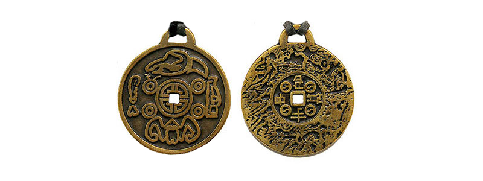
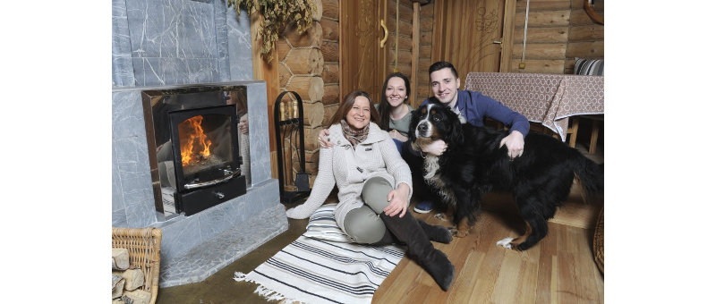

Главный астролог страны Тамара Глоба раскрыла секрет богатства и процветания
"С сегодняшнего дня Ваша жизнь может изменится, сегодня я помогу Вам совершить поворот на линию жизни, где Вы будете богаты, счастливы и удачливы.
Считается, что осуществить это очень непросто, но я знаю как это сделать. Сегодня я Вас этому научу!
Я проделала огромную работу, чтобы понять, какие именно механизмы нашего мира и каким образом надо запустить, чтобы человек обрел удачу и богатство. Ко мне обращается очень много людей, которые потеряли веру в жизнь с просьбой помочь начать жить в достатке.
Я помогаю каждому из них, помогу и Вам."
Главный астролог страны - Тамара Глоба
Главный вопрос всей моей профессиональной деятельности - как сделать каждого человека счастливым, открыть ему путь к благосостоянию, деньгам и удаче. Изучению этого вопроса я посвятила бóльшую часть своей жизни, и не зря. Три года назад я открыла для себя, как поставить человека на путь привлечения богатства и удачи.
Мое открытие проверили в действии мои близкие, друзья и знакомые, а затем и люди, которые ко мне обращаются за помощью, все они в восторге от чудодейственной силы, которая им теперь помогает в жизни. И огромное количество писем с благодарностью от них - это лучшее подтверждение тому, что метод Тамары Глобы работает, причем на 100%.
В наше время все привыкли, что за успех нужно бороться.
Все привыкли, что для достижения своих целей нужно "работать локтями" и в упорных схватках пытаться завоевать свое место под солнцем. Я тоже думала так. Но потом звезды подсказали мне, что успеха может добиться абсолютно каждый человек, ведь Вселенских благ хватит на всех. Конечно, поверить в такую истину довольно трудно, особенно когда каждый день ты видишь, как люди из кожи вон лезут, чтобы обеспечить себе достойное существование.
Как же получить все то, чего хочешь?
Расталкивая окружающих локтями практически невозможно чего-то добиться, это слишком затратный путь, он в конечном итоге не принесет радости и не приведет к результату, ведь рядом с вами как минимум десяток таких же, а кто победит — это еще вопрос. А главное, этот путь противоречит законам Вселенной.
Для получения тех благ, которых хочется именно Вам, нужно совсем иное, работа локтями тут бесполезна. Надо целенаправленно попасть в поток удачи и находится там не выпадая из него, иначе это будет лишь кратковременный проблеск. Чтобы попасть и удержаться в потоке удачи нужна мощная энергия, ученые зовут ее энергией внешнего намерения.
Вы когда-нибудь удивлялись, почему у некоторых людей все получается, а у многих других — нет? Почему у звезд телеэкранов такая ошеломительная популярность? Как они добились такого успеха? Кто-то скажет, что все просто - они избранные. Конечно же это не так, никто никого не избирает. Секрет богатых и успешных совершенно в другом - они научились пользоваться своим внешним намерением. У них получилось, но как показала моя практика, просто так взять и запустить механизм внешнего намерения почти невозможно. Как же быть?
Для начала нужен спусковой механизм.
Сегодня у меня есть ответ на вопрос, что же может помочь нам обрести ту самую энергию намерения и получить в этой жизни все, что мы действительно хотим. Для меня, как и для многих, кому я уже помогла, единственным по-настоящему действенным стал персональный талисман удачи и богатства.
Несколько лет я пыталась разгадать секрет создания такого талисмана. Из древних книг я узнала, что существовали амулеты с магическими свойствами, наделенные мощнейшей внешней энергией, которые давали своему владельцу силу Вселенной. Обретя такую силу, можно добиться успехов на любом поприще - стать богатым или знаменитым, здоровым или сильным, успешным или желанным.
И вот, наконец, я нашла мастеров, которые сохранили древние секреты создания такого персонального Талисмана Удачи и Богатства. При создании каждого амулета проводится древний ритуал на Ваше имя - и с этого момента монетка начинает служить Вам верой и правдой всю вашу жизнь.
Я попросила изготовить талисман для меня и моей подруги, которая помогала мне в этих поисках. Это было в буквальном смысле чудом, талисман заработал сразу, заработал так, что уже через неделю мы с подругой начали делиться потоком позитивных событий, которых раньше не могли даже допустить в нашей жизни.
Именно такой талисман-монетка для меня, а теперь и для многих людей, которым я уже помогла, стал тем единственным пропуском в жизнь, где все происходит так, как желаешь, где все получается, где жизнь полна счастья и благополучия. Он являет собой безотказный спусковой механизм, который приводит в движение закрытые ранее для человека энергетические потоки.
Мой амулет помогает мне получать все, чего я хочу.
Я самый авторитетный и известный астролог в России, у меня двое замечательных детей и прекрасные друзья, я получаю в жизни все, чего захочу, все происходит в моей жизни легко и в радость. Астрология конечно помогает мне, но главное, что дает мне в этой жизни все блага — это мой амулет, который поддерживает ту самую энергию внешнего намерения.
Теперь такой шанс есть и у Вас.
Теперь Вы можете наслаждаться жизнью, получать удовольствие, быть счастливым и богатым, закажите свой личный талисман и наслаждайтесь жизнью сполна! Сегодня я открыла Вам секрет привлечения богатства и удачи, Вам остается только использовать его для себя!
От редакции
Тамара Глоба была права, сказав, что писем в редакцию будет очень много, так как огромное количество людей захотят обрести удачу, благополучие и финансовое изобилие, поэтому она предусмотрительно поделилась координатами производителей амулета. Заказать амулет вы можете в единственном месте - на сайте сибирских мастеров, нажав на кнопку:
Я тоже слышала про персональные монеты-талисманы, да вот только отложила приобретение, все потом, потом... А что потом? Жизнь сейчас идет, второй не будет, надо все же заказать сейчас, да начать новую жизнь
Я заказала монетку своей маме и украдкой положила в ее кошелек. Вы бы видели, как менялась ее жизнь каждый день. Обычно мы видимся раз-два в месяц, но теперь она приходит в гости каждый вечер и рассказывает о том, как удивительно прошел день! Монетка работает, это факт!
Я заказала себе монетку буквально месяц назад. Вчера мне повысили зарплату! Бог знает. что это - самовнушение или энергия намерения, но это КРУТО!!!
Удача такая странная шутка, то приходит, когда ее не ждешь, то ее совсем нет, когда нужна как кислород! То же самое и с деньгами. Многие говорят, что не в деньгах счастье. Возможно. Но я верю, что с деньгами больше возможностей, да и жить проще. Лет 5 назад я просто отчаялась выйти замуж, особенно когда сыграла свадьбу моя последняя незамужняя подружка подружка. Думала, все конец пришел! Останусь старой девой! Коты это мой удел. Для меня слово это не пустой звук. Я верю, что слова материальны. Я постоянно настраивала себя на позитив, отгоняла негативные мысли. Старалась думать о хорошем. Но мысли об одиночестве с котами меня не покидали. Подружки, видя мои переживания, которые я тщательно скрывала, решили, конечно, в шутку сделать мне такой подарок в виде монетки-амулета! Вместе посмеялись, я закинула его в кошелек вместе со всей мелочью и забыла про него! Не знаю, что подействовало, сила слова или моя уверенность в себе, но через три месяца мне предложил руку и сердце прекрасный парень, с которым мы когда-то учились в вузе. Я встретила его там, где совершенно не ожидала - в Венеции, мы в одно время случайно оказались там. Случайно? Видимо нет. Да и по работе мои дела как следует пошли в гору, расту) Монетка всегда со мной, я верю в силу ее действия.
Я очень рад, что прочитал эту статью, мне сейчас очень не хватает такого талисмана удачи, это супер, что я теперь начну жизнь заново!
Я сначала думал, что фигня все это, что пустое суеверие, пока приятель не приехал за мной на рыбалку на крузаке 200-м, хотя я его за 3 месяца до этого на ниве видел. Я чуть под землю не провалился от белой зависти, а он после рыбалки (кстати поймал он вдвое больше меня) мне и рассказал про амулет. Не верил, говорит, ну и не верь дальше, а я на крузере буду ездить. Вот тут я и созрел до амулета, а через месяц на себе испытал его действие. Что сказать, КРУТО!

Поставили лайк | 14712 пользователей ВК


Поставили лайк | 18437 пользователей ОК
Согласна с Тамарой АБСОЛЮТНО! Я тоже всю свою жизнь была уверена, что за успех нужно биться насмерть. Но я решила плюнуть на все и заказала себе счастливую монетку. И представляете, даже я, скептик до мозга костей, просто не успевала открывать рот от удивления! За полгода я сменила работу, купила квартиру и нашла прекрасного мужчину. Желания исполняются!!!